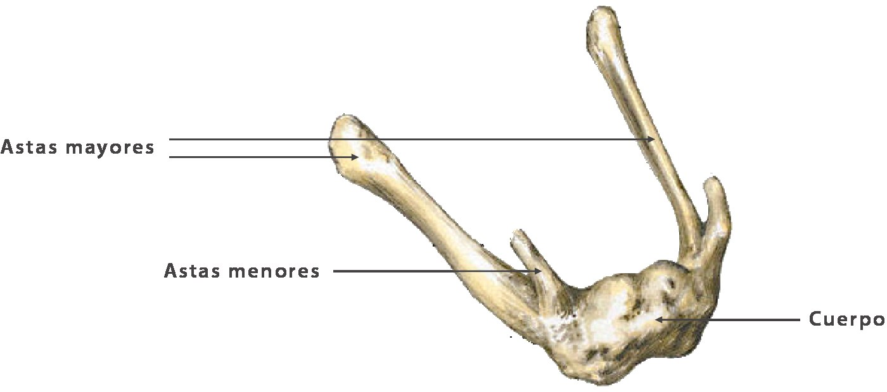
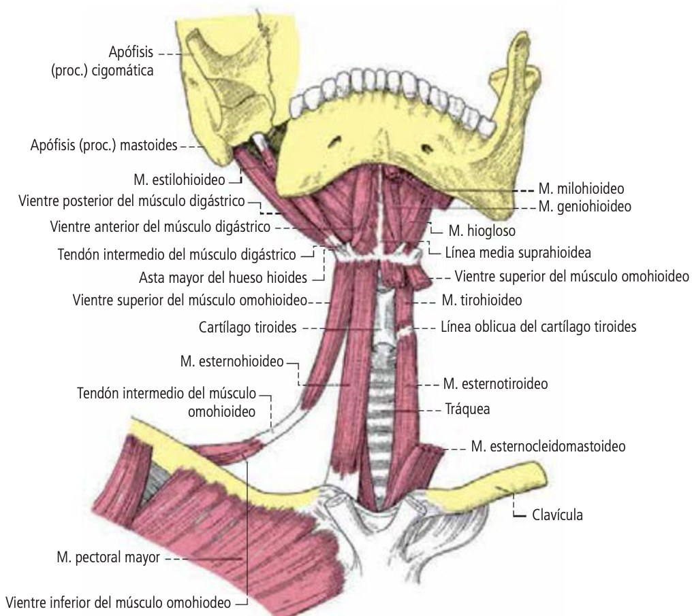
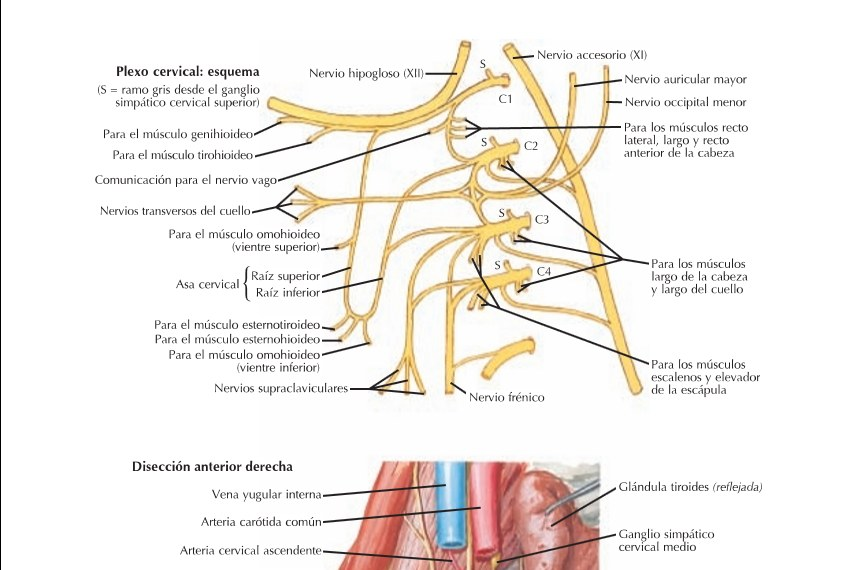
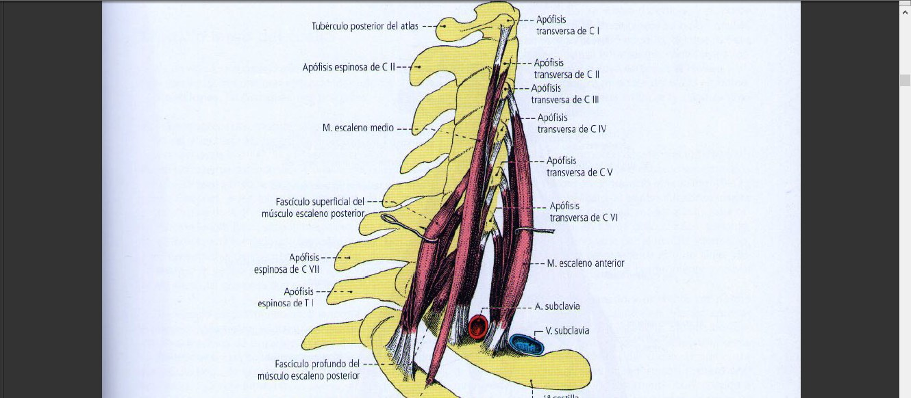
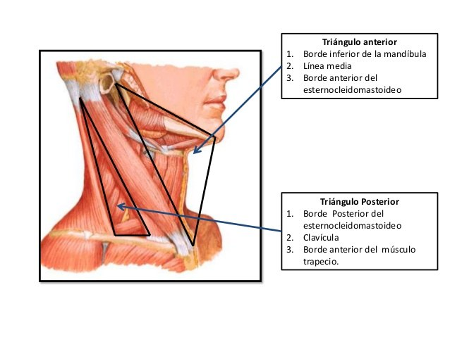

ClinicusMed · Dossiê Clinicus — Padrão de Excelência
Antes de decorar músculo por músculo, fixe os limites — é a base de tudo que a banca cobra sobre "onde termina o pescoço e começa o quê".
| Limite | Estrutura |
|---|---|
| Anterior e inferior | Borda superior do manúbrio esternal + face superior de ambas as clavículas |
| Anterior e superior | Borda inferior do arco mandibular + borda posterior do ramo ascendente da mandíbula |
| Posterior e superior | Da articulação temporomandibular até a protuberância occipital externa |
| Posterior e inferior | Linha que passa pelas duas articulações acromioclaviculares e pela apófise espinhosa de C7 |
| Região | Subdivisão |
|---|---|
| Anterior | Superficiais: suprahioidea + infrahioidea |
| Profunda: prevertebral | |
| Lateral | Superficial |
| Profunda: esternocleidomastóidea (carotídea) | |
| Posterior | Nuca |

Osso ímpar, mediano e simétrico, situado transversalmente na parte anterior e superior do pescoço — acima da laringe, abaixo da língua, abaixo e atrás da mandíbula.
O hioide é o único osso do corpo humano que não faz articulação direta com nenhum outro osso. Ele "flutua" no pescoço, suspenso inteiramente por músculos e ligamentos (em especial o ligamento estilo-hioideo, que o conecta ao processo estiloide do temporal). Isso faz dele um ponto de ancoragem móvel: sobe e desce na deglutição, participa da fonação e serve de "viga" para toda a musculatura supra/infra-hioidea se organizar.
Os músculos do pescoço asseguram os movimentos da cabeça e do raquis cervical. A distribuição topográfica corresponde a uma distinção funcional:
| Grupo | Função |
|---|---|
| Dorsais | Extensores |
| Laterais | Rotadores / flexores laterais |
| Ventrais (prevertebrais) | Flexores — + os músculos que se inserem no osso hioide |
Formam o plano profundo da região cervical anterior, à frente da coluna cervical.
| Músculo | Inserções | Inervação |
|---|---|---|
| Longo da cabeça (reto anterior maior) | Tubérculos anteriores das apófises transversas de C3-C6 → porção basilar do occipital | Nervos profundos do plexo cervical |
| Reto anterior da cabeça (reto anterior menor) | Apófise transversa e massa lateral do atlas → porção basilar do occipital + porção petrosa do temporal. Une o atlas à base do crânio | 1º nervo cervical |
| Longo do pescoço | 3 porções: oblíqua descendente (tubérculo do atlas → C3-C6), oblíqua ascendente (T1-T3 → C4-C6), longitudinal (face anterior dos corpos vertebrais, atlas até T3). Une as vértebras cervicais às 3 primeiras torácicas | Ramos anteriores dos 4 primeiros nervos cervicais |
São oito músculos que se inserem no hioide, divididos em dois grupos pela posição relativa ao osso:

Músculos delgados e achatados, longe da coluna vertebral, dispostos em 2 planos: superficial (esterno-hioideo + omo-hioideo) e profundo (esternotireóideo + tiro-hioideo).
| Músculo | Inserções |
|---|---|
| Esterno-hioideo | ¼ medial da borda posterior da clavícula + lig. esternoclavicular + metade lateral do manúbrio + 1º cartilagem costal → borda inferior do corpo do hioide |
| Omo-hioideo | Ventre inferior: borda superior da escápula (oblíquo p/ frente). Ventre superior: vertical/medial → borda inferior-lateral do corpo do hioide |
| Esternotireóideo | Face posterior do manúbrio + 1º cartilagem costal → linha oblíqua da face anterolateral da asa da cartilagem tireoide |
| Tiro-hioideo | Face anterolateral da cartilagem tireoide (linha oblíqua) → borda e face superficial do corpo + base da asta maior do hioide |
| Músculo | Inserções | Inervação |
|---|---|---|
| Digástrico | Ventre posterior: face medial da base da apófise mastóidea (incisura mastóidea). Ventre anterior: tubérculo mentoniano da mandíbula (fossa digástrica) | Dupla: posterior → n. facial; anterior → n. do milo-hioideo |
| Estilo-hioideo | Face posterolateral do processo estiloide do temporal → face anterior do corpo do hioide | Ramo do n. facial |
| Milo-hioideo | Linha milo-hioidea da mandíbula → osso hioide. Delgado e quadrilátero, forma o assoalho da boca | N. mandibular (trigêmeo) via n. alveolar inferior |
| Gênio-hioideo | Espinha mentoniana inferior da mandíbula → face anterior do hioide. Curto e cilíndrico, acima do digástrico/milo-hioideo | Colateral do n. hipoglosso |

Formado pelas ramas anteriores de C1 a C4, o plexo cervical fica na região lateral profunda do pescoço, coberto pelo esternocleidomastóideo. Dele saem ramos motores e sensitivos essenciais:
| Ramo | Território / Importância |
|---|---|
| Nervo frênico (C3-C4-C5 — "C3,4,5 mantêm o diafragma vivo") | Motor do diafragma — ver Cap. 7 |
| Alça cervical (alça do hipoglosso) | Raiz superior (C1, "carona" no hipoglosso) + raiz inferior (C2-C3) → inerva 3 dos 4 infra-hioideos |
| Ramos cutâneos (cervical transverso, auricular maior, occipital menor, supraclaviculares) | Sensibilidade da pele do pescoço, ombro e região da orelha |
São cinco, em dois planos:
| Músculo | Inserções / Ação | Inervação |
|---|---|---|
| Platisma (cutâneo do pescoço) | Largo e delgado, ultrapassa os limites do pescoço (desce ao tórax, sobe à face). Inserções: tecido subcutâneo infraclavicular/deltoide/acromial → mandíbula, comissura labial. Ação: traciona a pele do mento para baixo e abaixa a comissura labial | Ramo cervical do n. facial |
| Esternocleidomastóideo (ECM) | Volumoso e longo, une a apófise mastoide + occipital à parte superior do tórax. Inserções: clavícula + esterno → apófise mastoide + linha nucal superior. Ação: flexiona a cabeça, inclina para o mesmo lado, roda a face para o lado OPOSTO; bilateral = flexão direta da cabeça | Ramo lateral do n. acessório (espinhal, XI) |

Formam uma massa cônica das apófises transversas cervicais até as 2 primeiras costelas.
| Músculo | Inserções |
|---|---|
| Escaleno anterior | Tubérculo anterior de C3-C6 → borda medial da face superior da 1ª costela (tubérculo de Lisfranc) |
| Escaleno médio | Tubérculo anterior de C2-C6 + apófise transversa de C7 → face superior da 1ª costela (atrás do sulco da a. subclávia) + fascículo para a 2ª costela |
| Escaleno posterior | Tubérculo posterior de C4-C6 → borda superior e face lateral da 2ª costela |
São oito músculos, em 3 planos:
| Plano | Músculos |
|---|---|
| A | Esplênios do pescoço e da cabeça |
| B | Semiespinhoso da cabeça + Longuíssimo da cabeça |
| C (profundo) | Semiespinhoso do pescoço, retos posteriores maior e menor da cabeça, oblíquos maior e menor da cabeça |
| Músculo | Detalhe-chave |
|---|---|
| Esplênios | Apófises espinhosas de C7 + 4-5 primeiras torácicas → linha nucal superior + mastoide (cabeça) / tubérculo posterior de atlas-áxis-C3 (pescoço) |
| Semiespinhoso da cabeça (complexo maior) | Ocupa toda a região da nuca; apófises transversas das 5 primeiras torácicas + 4-5 últimas cervicais → linhas nucais superior e inferior |
| Longuíssimo da cabeça | Tubérculos posteriores das 4 últimas cervicais → vértice e borda posterior da mastoide |
| Semiespinhoso do pescoço | 5 primeiras torácicas → vértice das apófises espinhosas das 5 últimas cervicais |
| Reto posterior maior | Une o áxis ao occipital — apófise espinhosa do áxis → metade lateral da linha nucal inferior |
| Reto posterior menor | Tubérculo posterior do atlas → metade medial da linha nucal inferior |
| Oblíquo maior (inferior) | Une áxis ao atlas — apófise espinhosa do áxis → apófise transversa do atlas |
| Oblíquo menor (superior) | Une atlas ao occipital — apófise transversa do atlas → linha nucal inferior |
São duas áreas triangulares — anterior e posterior ao ECM — que contêm as estruturas viscerais e vasculonervosas do pescoço. É um dos temas mais cobrados em prova porque organiza "onde fica cada coisa".

| Limite | Estrutura |
|---|---|
| Superior | Borda inferior da mandíbula |
| Medial | Linha média do pescoço |
| Lateral | Borda anterior do ECM |
Subdivisões: muscular (omotraqueal), carotídeo, submandibular, submentoniano.
Conteúdo geral: músculos tiro-hioideo, esternotireóideo, esterno-hioideo; glândula tireoide e paratireoides; laringe, traqueia, esôfago; glândula submandibular; porção caudal da parótida; artérias carótida comum/externa/interna, tireóidea superior/inferior, facial, submentoniana, lingual.
| Subtriângulo | Limites | Conteúdo |
|---|---|---|
| Muscular (omotraqueal) | Sup.: hioide · Medial: linha média · Lateral: ventre superior do omo-hioideo + borda anterior do ECM | Tiro-hioideo, esternotireóideo, esterno-hioideo · a. tireóidea sup/inf, v. jugular anterior · tireoide, paratireoides, laringe, traqueia, esôfago |
| Submentoniano | Inf.: hioide · Medial: linha média · Lateral: ventre anterior do digástrico | V. jugular anterior, linfonodos submentonianos |
| Submandibular (digástrico) | Sup.: mandíbula · Medial: ventre posterior do digástrico · Lateral: ventre anterior do digástrico | A./v. facial, a./v. submentoniana, a./v. linguais · gl. submandibular + linfonodos (anterior) · parótida caudal (posterior) · n. milo-hioideo, n. hipoglosso (XII) |
| Carotídeo | (região do feixe vasculonervoso principal) | Carótida comum/interna/externa, seio carotídeo, v. jugular interna, n. vago, n. hipoglosso, alça cervical |
| Limite | Estrutura |
|---|---|
| Anterior | Borda posterior do ECM |
| Posterior | Borda anterior do trapézio |
| Inferior | Terço médio da clavícula |
Subdivisões: occipital e omoclavicular (supraclavicular).
| Subtriângulo | Limites | Conteúdo |
|---|---|---|
| Occipital | Anterior: ECM · Posterior: trapézio · Inferior: ventre inferior do omo-hioideo | Nervo acessório (XI), ramos do plexo cervical, porção superior do plexo braquial, n. supraclavicular |
| Omoclavicular (supraclavicular) | Superior: ventre inferior do omo-hioideo · Anterior: borda posterior do ECM · Inferior: clavícula | 3ª porção da a. subclávia, troncos do plexo braquial, n. para o m. subclávio |
Um caso clássico de cirurgia de cabeça e pescoço: localização topográfica de uma massa cervical → biópsia de linfonodo no triângulo posterior → complicação neurológica pós-operatória. Serve pra fixar os triângulos do pescoço E a vulnerabilidade cirúrgica do nervo acessório.
A Clinicus selecionou este conteúdo para complementar seu estudo. Não substitui a leitura do resumo — o resumo ensina, o vídeo reforça.
Carregando recomendações...
O sistema guarda, no seu navegador, quais cards você já sabe bem e quais precisam voltar mais cedo — cada vez que você avalia um card, ele recalcula quando ele deve voltar.
10 questões, do mais básico ao mais puxado. Escolhe uma alternativa, depois clica em "Ver comentário completo" — vale a pena ler até quando você acerta, porque o comentário explica cada alternativa, não só a certa.